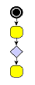
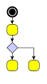
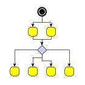
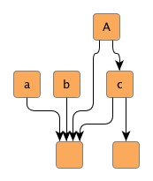
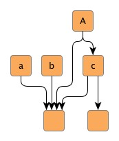
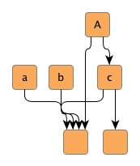
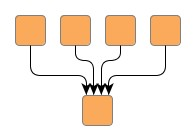
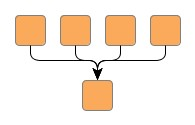

| Advanced Layout Concepts | ||
|---|---|---|
| Prev | Chapter 5. Automatic Graph Layout | Next |
The layout algorithms that come with the yFiles library support a number of sophisticated and powerful concepts for layout generation, including:
Furthermore, many of the yFiles layout algorithms provide support for advanced inremental layout and the closely related concept of "layout from sketch." An introduction to both these concepts is presented in the section called “Incremental Layout”.
The term "grouped graph" denotes a graph structure where, conceptually, nodes can be declared "children" of a common other node, their "parent." This can be exercised recursively, i.e., parents can be declared children of other parents, resulting in a hierarchy of nodes of possibly arbitrary depth.
The visual presentation of such a hierarchy is normally done by placing the children near each other and have their parent enclosing them. The parent is called a "group node," and the children are its content, they are "grouped nodes." Declaring some nodes to be children of another node is called "grouping."
Especially in the context of the yFiles Viewer distribution there is another term used for grouped graphs, they are also called "graph hierarchies." See the description of graph hierarchies.
Layout support for grouped graphs primarily means proper handling of grouped nodes and their enclosing group node. There are three different group node policies available:
Table 5.4, “Layout support for grouped graphs” lists the layout algorithms that provide support for group nodes and their content.
Table 5.4. Layout support for grouped graphs
| Layout Style | Classname | Note |
|---|---|---|
| Hierarchical | IncrementalHierarchicLayouter |
IncrementalHierarchicLayouter provides direct support for grouped graphs for both incremental as well as non-incremental layout mode. See the description of IncrementalHierarchicLayouter's advanced concepts for more information. |
| Organic | SmartOrganicLayouter |
Class SmartOrganicLayouter provides support for all three group node policies. See the description of SmartOrganicLayouter's support for layout of grouped graphs for more information. |
| Orthogonal | OrthogonalGroupLayouter |
Support for group node policies is partly handled by prepended layout stages. See the description of orthogonal group layout for more information. |
Table 5.5, “Routing support for grouped graphs” lists the routing algorithms that provide support for grouped graphs.
Table 5.5. Routing support for grouped graphs
| Routing Style | Classname | Note |
|---|---|---|
| Orthogonal | OrthogonalEdgeRouter |
OrthogonalEdgeRouter's support for routing with group nodes is partly handled by prepended layout stages. See the description of OrthogonalEdgeRouter for more information. Classes ChannelEdgeRouter and EdgeRouter provide inherent support for routing with group nodes. |
Further support for grouped graphs also includes minimum size constraints for group nodes. These are supported by the following layout algorithms: SmartOrganicLayouter and IncrementalHierarchicLayouter.
In the presence of package
y.view (i.e., with the yFiles Viewer distribution), the setup for layout calculation
of a Graph2D
(i.e., with the yFiles Viewer distribution), the setup for layout calculation
of a Graph2D that has associated a
HierarchyManager
that has associated a
HierarchyManager object is a
matter of using the convenience methods of class
GroupLayoutConfigurator
object is a
matter of using the convenience methods of class
GroupLayoutConfigurator as
shown in Example 5.7, “Layout preparation with classes from package y.view”.
as
shown in Example 5.7, “Layout preparation with classes from package y.view”.
Example 5.7. Layout preparation with classes from package y.view
// 'graph' is of type y.view.Graph2D. GroupLayoutConfigurator glc = new GroupLayoutConfigurator(graph); // Prepare all relevant information for a layout algorithm. glc.prepareAll(); // Invoke buffered layout. invokeBufferedLayout(graph, new IncrementalHierarchicLayouter(), false); // Restore all group node specific sizes and insets after a layout algorithm // has been run. glc.restoreAll();
Setup code can be reduced to a minimum by using convenience class Graph2DLayoutExecutor, which also takes care of all necessary configuration steps related to grouped graphs.
Example 5.8, “Layout preparation without classes from package y.view” demonstrates how to set up a
grouped graph without the convenience functionality from
package y.view.
Basically, the data providers that hold the necessary information about the
grouped graph's hierarchy of nodes have to be filled manually, and be registered
with the graph using the data provider look-up keys defined in interface
GroupingKeys .
.
Example 5.8. Layout preparation without classes from package y.view
// 'graph' is of type y.layout.LayoutGraph. // Create the node maps that are to be used as data providers later on. NodeMap groupKey = graph.createNodeMap(); NodeMap nodeID = graph.createNodeMap(); NodeMap parentNodeID = graph.createNodeMap(); // Register the node maps as data providers with the graph. // Use the "well-known" look-up keys defined in interface GroupingKeys. graph.addDataProvider(Grouping.GROUP_DPKEY, groupKey); graph.addDataProvider(Grouping.NODE_ID_DPKEY, nodeID); graph.addDataProvider(Grouping.PARENT_NODE_ID_DPKEY, parentNodeID); // Now, set up the hierarchy of nodes of the grouped graph, i.e., define some // of the nodes to be group nodes and others to be their content. mySetupNodeHierarchy(graph, groupKey, nodeID, parentNodeID); // Invoke buffered layout. invokeBufferedLayout(graph, new IncrementalHierarchicLayouter(), false);
The information for the node IDs and the parent node IDs is of symbolic nature that is used in the process of layout calculation to identify the proper parent for a given child, but also to find all children that belong to the same parent. Hence, it is important for the symbolic IDs to properly match between these two data providers, so that the grouped graph's hierarchy of nodes is correctly expressed.
Example 5.9, “Encoding a grouped graph's hierarchy of nodes in data providers” demonstrates possible content for the data providers. Here, the nodes themselves are used to denote symbolic IDs for both "ordinary" nodes and group nodes. Carefully observe the usage of the indirection scheme in this example for setting up the parent-child relation.
Example 5.9. Encoding a grouped graph's hierarchy of nodes in data providers
// Now, set up the hierarchy of nodes of the grouped graph, i.e., define some
// of the nodes to be group nodes and others to be their content.
for (int i = 0; i < 10; i++) {
// Nodes 1, 5, and 9 are defined to be group nodes.
if (i % 4 == 1) {
groupKey.setBool(n[i], true);
// Set a symbolic ID for the group node that is used for look-up purposes.
nodeID.set(n[i], n[i]);
continue;
}
// Set a symbolic ID for the node that is used for look-up purposes.
nodeID.set(n[i], n[i]);
// Node 2 is defined child of node 1;
// node 6 is defined child of node 5.
if (i % 4 == 2) {
// Establish the relation to the parent.
parentNodeID.set(n[i], nodeID.get(n[i - 1]));
continue;
}
// Node 3 is defined child of node 1;
// node 7 is defined child of node 5.
if (i % 4 == 3) {
// Establish the relation to the parent.
parentNodeID.set(n[i], nodeID.get(n[i - 2]));
}
// Nodes 0, 4, and 8 remain "ordinary" nodes...
}
A group node's size is determined by the bounding box that encloses its children
and additional insets that are added to each of the box's side.
To specify insets individually, a data provider can be used to hold a YInsets object for each group node.
This data provider is then registered with the graph using the look-up key
GROUP_NODE_INSETS_DPKEY
object for each group node.
This data provider is then registered with the graph using the look-up key
GROUP_NODE_INSETS_DPKEY defined in interface GroupingKeys.
defined in interface GroupingKeys.
Example 5.10, “Defining a group node's insets” shows how to add individual YInsets objects for group nodes to a node map, and how the node map is registered as a data provider with the graph.
Example 5.10. Defining a group node's insets
// 'graph' is of type y.layout.LayoutGraph.
// Create the node map that is to be used as a data provider later on.
NodeMap groupNodeInsets = graph.createNodeMap();
// Predefine some YInsets objects.
YInsets in[] = new YInsets[3];
in[0] = new YInsets(10, 20, 30, 40);
in[1] = new YInsets(20, 20, 20, 20);
in[2] = new YInsets(40, 30, 20, 10);
NodeList gnl = getListOfAllGroupNodes(graph);
for (NodeCursor nc = gnl.nodes(); nc.ok(); nc.next()) {
Node n = nc.node();
groupNodeInsets.set(n, in[getGroupType(n)]);
}
// Register the node map as a data provider with the graph.
// Use the "well-known" look-up keys defined in interface GroupingKeys.
graph.addDataProvider(GroupingKeys.GROUP_NODE_INSETS_DPKEY, groupNodeInsets);
// Invoke buffered layout.
invokeBufferedLayout(graph, new IncrementalHierarchicLayouter(), false);
Class FixedGroupLayoutStage adds support for the fixed group node policy to both hierarchical layout and
orthogonal layout.
Example 5.11, “Setup for fixed group node content” shows how the fixed group node policy is
realized as a layout stage that is prepended to the actual layout algorithm's
invocation.
adds support for the fixed group node policy to both hierarchical layout and
orthogonal layout.
Example 5.11, “Setup for fixed group node content” shows how the fixed group node policy is
realized as a layout stage that is prepended to the actual layout algorithm's
invocation.
Example 5.11. Setup for fixed group node content
void invokeBufferedLayout(LayoutGraph graph, Layouter layouter,
boolean orthogonal)
{
// Create a specialized layout stage that fixes the contents of the group
// nodes.
FixedGroupLayoutStage fixedGroupLayoutStage = new FixedGroupLayoutStage();
if (orthogonal) {
fixedGroupLayoutStage.setInterEdgeRoutingStyle(
FixedGroupLayoutStage.ROUTING_STYLE_ORTHOGONAL);
}
// Prepend the stage to the given layout algorithm.
layouter.prependStage(fixedGroupLayoutStage);
// Invoke buffered layout for the given layout algorithm.
new BufferedLayouter(layouter).doLayout(graph);
// Remove the prepended layout stage.
layouter.removeStage(fixedGroupLayoutStage);
}
The tutorial demo application GroupingLayoutWithoutAView.java gives a detailed demonstration on how to set up a grouped graph without the functionality present in package y.view. Also, the modules that are used to set up the layout algorithms in an application context give deep insights in an algorithm's configuration:
The two ends of an edge path are also called source port and target port, respectively. A port constraint serves to pinpoint an edge's end at its source node or target node. There are two kinds of port constraints available:
Both kinds of port constraints can easily be combined to express, for example, that an edge's source port should connect to the middle of the source node's upper border.
Table 5.6, “Layout support for port constraints” lists the layout algorithms that provide support for port constraints.
Table 5.6. Layout support for port constraints
| Layout Style | Classname | Note |
|---|---|---|
| Hierarchical | IncrementalHierarchicLayouter |
IncrementalHierarchicLayouter by default obeys weak and strong port constraints as soon as they are set. See the description of the hierarchical layout style for more information. |
| Tree | GenericTreeLayouter |
Nearly all of the predefined node placer implementations that can be used with the generic tree layout algorithm by default obey strong and weak port constraints as soon as they are set. See the description of generic tree layout for more information. |
Table 5.7, “Routing support for port constraints” lists the routing algorithms that provide support for port constraints.
Table 5.7. Routing support for port constraints
| Routing Style | Classname | Note |
|---|---|---|
| Orthogonal | OrthogonalEdgeRouter |
All classes by default obey weak and strong port constraints as soon as they are set. See the descriptions of OrthogonalEdgeRouter, ChannelEdgeRouter, BusRouter, and EdgeRouter for more information. |
Example 5.12, “Adding source port constraints to some edges” demonstrates the creation of
PortConstraint objects, and how they
are stored in an edge map.
The edge map is then registered as a data provider with the graph using the
look-up key
SOURCE_PORT_CONSTRAINT_KEY
objects, and how they
are stored in an edge map.
The edge map is then registered as a data provider with the graph using the
look-up key
SOURCE_PORT_CONSTRAINT_KEY .
During layout calculation, an algorithm first retrieves the data provider using
the look-up key, and afterwards retrieves the contained information.
.
During layout calculation, an algorithm first retrieves the data provider using
the look-up key, and afterwards retrieves the contained information.
The actual coordinates of an edge end point that has a strong port constraint associated are determined at the time a layout algorithm (or a routing algorithm) processes the edge. In other words, the strong characteristic of a strong port constraint is determined by its "normal" coordinates at the time of processing. Note that the specified coordinates of such edge end points are always interpreted relative to the respective node's center.
Example 5.12. Adding source port constraints to some edges
// 'graph' is of type y.layout.LayoutGraph. // Create edge map that is used as a data provider later on. EdgeMap pcMap = graph.createEdgeMap(); // Set the coordinates for the edge's source port. (Actually, this could also // be done anywhere prior to invoking the layout algorithm.) graph.setSourcePointRel(edge3, new YPoint(-10, 20)); // Create PortConstraint objects: // 1) Port constraint that allows an edge end to connect to any side of its // respective node. PortConstraint pc1 = PortConstraint.create(PortConstraint.ANY_SIDE); // 2) Port constraint that determines an edge end to connect *anywhere* to the // upper (NORTH) side of its respective node. PortConstraint pc2 = PortConstraint.create(PortConstraint.NORTH); // 3) Strong port constraint that determines an edge end to connect to the // lower (SOUTH) side of its respective node. The actual end point is at a // fixed coordinate. PortConstraint pc3 = PortConstraint.create(PortConstraint.SOUTH, true); // Establish a mapping from edges to port constraints. pcMap.set(edge1, pc1); pcMap.set(edge2, pc2); pcMap.set(edge3, pc3); // Register the edge map as a data provider with the graph. // Use the "well-known" look-up key defined in interface PortConstraintKeys. // Note that the above defined port constraints are set so that they apply to // the source ends of their respective edges only. graph.addDataProvider(PortConstraint.SOURCE_PORT_CONSTRAINT_KEY, pcMap); // Invoke buffered layout. invokeBufferedLayout(graph, new IncrementalHierarchicLayouter());
The tutorial demo application LayoutWithoutAView.java demonstrates how to set up port constraints (both weak and strong) for edge end points without the functionality present in package y.view.
The concept of port candidates is an extension to that of classic port constraints as described above. Unlike port constraints, port candidates can be used in conjunction with both nodes and edges. When used in conjunction with nodes, port candidates provide a means to:
A typical example for the use of port candidates is a flow diagram as shown in Figure 5.8, “Using port candidates to control connection points”: The diamond shape, which is the visualization of a switch, should have its incoming edge connecting at the top. The first outgoing edge should connect at the bottom (left image), the second at the right, the third at the left (middle image). If there are more outgoing edges, these edges should connect at the bottom as well as more than one incoming edge should connect at the top (right image).
Figure 5.8. Using port candidates to control connection points
|

|

|

|
| Incoming edges connect at the top, the first outgoing edge at the bottom... | ... more outgoing edges occupy the right and left corners... | ... when all corners are occupied, the additional edges connect at the bottom. |
Class PortCandidate enables definition
of port candidates that conceptually correspond to either weak port
constraints, i.e., effectively describe side constraints, or strong port
constraints, which encode specific anchor locations at a node.
Note that port candidates that correspond to strong port constraints directly
include the coordinates for the actual anchor locations.
enables definition
of port candidates that conceptually correspond to either weak port
constraints, i.e., effectively describe side constraints, or strong port
constraints, which encode specific anchor locations at a node.
Note that port candidates that correspond to strong port constraints directly
include the coordinates for the actual anchor locations.
PortCandidate additionally allows to associate costs with a given port candidate, which can be used to establish an order of precedence among multiple port candidates. When a given edge port is being assigned to any of the available port candidates at a node, those with low costs are favored compared to other port candidates with higher costs associated.
To define the set of side constraints and anchor locations at a node, multiple
port candidates can easily be combined using the services of class
PortCandidateSet .
When a PortCandidate object is added to an instance of PortCandidateSet, the
capacity of the port candidate can optionally be configured.
The capacity of a given port candidate (sometimes also referred to as
"cardinality") specifies the allowed number of connecting edges at that side or
anchor location.
.
When a PortCandidate object is added to an instance of PortCandidateSet, the
capacity of the port candidate can optionally be configured.
The capacity of a given port candidate (sometimes also referred to as
"cardinality") specifies the allowed number of connecting edges at that side or
anchor location.
Matching port candidates means the process of distributing a node's edges to the available port candidates. All edges connecting to a node that has a set of port candidates associated with it via a PortCandidateSet object are distributed among the available port candidates with respect to:
For example, when the limit of allowed edges for a given port candidate with costs k is reached, i.e., the given port candidate is said to be "saturated," then the next least expensive port candidate among the remaining ones is chosen to connect edges to.
Example 5.13, “Defining a port candidate set” demonstrates how to create a candidate set for the diamond node shown in Figure 5.8, “Using port candidates to control connection points”: First, port candidates for the four corners of the diamond are defined. The number of connecting edges for these candidates is limited to 1. Further port candidates, which can take an unlimited number (Integer.MAX_VALUE) of edges, are defined to handle any additional edges. To let the edges first connect to the corners before the additional candidates are occupied, a higher cost is associated with these latter candidates.
Example 5.13. Defining a port candidate set
// define a PortCandidateSet
PortCandidateSet candidateSet = new PortCandidateSet();
// the node has the size (30, 30) with the point (0, 0) at the center
// so the coordinates for the top corner are (0, -15)
// create a candidate at the top corner with direction NORTH and cost 0
PortCandidate candidate =
PortCandidate.createCandidate(0, -15, PortCandidate.NORTH, 0);
// add it to the set and allow only one edge to connect to it
candidateSet.add(candidate, 1);
// do the same for the other three corners
candidateSet.add(
PortCandidate.createCandidate(0, 15, PortCandidate.SOUTH, 0), 1);
candidateSet.add(
PortCandidate.createCandidate(15, 0, PortCandidate.EAST, 0), 1);
candidateSet.add(
PortCandidate.createCandidate(-15, 0, PortCandidate.WEST, 0), 1);
// to allow more edges to connect at the top and bottom
// create extra candidates and allow Integer.MAX_VALUE edges to connect
// to avoid that these candidates are occupied before the others
// associate a cost of 1 with them
candidateSet.add(
PortCandidate.createCandidate(0, -15, PortCandidate.NORTH, 1),
Integer.MAX_VALUE);
candidateSet.add(
PortCandidate.createCandidate(0, 15, PortCandidate.SOUTH, 1),
Integer.MAX_VALUE);
A similar port candidates setup can be observed in the tutorial demo application PortCandidateDemo.java.
To influence the matching process, a subset of the PortCandidate objects used
for a node can additionally be associated with the respective ports of its
connecting edges.
The subset then defines a restricted set of desired port candidates an edge
prefers to connect to.
The PortCandidate objects can be combined using
java.util.Collection objects which are stored by means
of data providers.
The data providers are registered with the graph using the look-up keys
SOURCE_PCLIST_DPKEY and
TARGET_PCLIST_DPKEY
and
TARGET_PCLIST_DPKEY .
.
Table 5.8, “Layout support for port candidates” lists the layout algorithms that provide support for port candidates.
Table 5.8. Layout support for port candidates
| Layout Style | Classname | Note |
|---|---|---|
| Hierarchical | IncrementalHierarchicLayouter |
IncrementalHierarchicalLayouter supports port candidates as soon as they are set. See the description of incremental hierarchical layout for more information. |
The PortCandidateSet objects for the node set of a graph can be registered by
means of a data provider using the look-up key
NODE_DP_KEY .
.
Example 5.14. Registering candidates
// 'candidateSet' is of type y.layout.PortCandidateSet. // 'node' is of type y.base.Node and is the node which should be associated with // the candidate set. // 'graph' is of type y.layout.LayoutGraph. // Create a data provider to associate the candidates with the node. NodeMap pcMap = graph.createNodeMap(); // Associate the candidate set with the node. pcMap.set(node, candidateSet); // Register the data provider. graph.addDataProvider(PortCandidateSet.NODE_DP_KEY, pcMap);
The tutorial demo application PortCandidateDemo.java demonstrates how to configure port candidates for nodes.
The same scheme of combining PortCandidate objects using Collection objects as used for the matching functionality also enables creating enhanced port constraint definitions for edges. The layouters which support this feature are listed in Table 5.9, “Layout support for enhanced port candidates”.
Table 5.9. Layout support for enhanced port candidates
| Layout Style | Classname | Note |
|---|---|---|
| Hierarchical | IncrementalHierarchicLayouter |
IncrementalHierarchicalLayouter supports port candidates as soon as they are set. See the description of incremental hierarchical layout for more information. |
In particular, this scheme is supported by yFiles routing algorithms, and it allows to conveniently specify side constraints comprising two or three sides, for example. Table 5.10, “Routing support for port candidates” lists the routing algorithms that provide support for port candidates modeling enhanced port constraints.
Table 5.10. Routing support for port candidates
| Routing Style | Classname | Note |
|---|---|---|
| Orthogonal | OrthogonalEdgeRouter |
All classes by default support port candidates as soon as they are set. See the descriptions of OrthogonalEdgeRouter, ChannelEdgeRouter, BusRouter, and EdgeRouter for more information. |
Example 5.15, “Creating enhanced port constraints using port candidates” shows how port candidates can be used to model enhanced port constraints that allow the source port of edges to connect to two sides of the start nodes.
Example 5.15. Creating enhanced port constraints using port candidates
// 'graph' is of type y.layout.LayoutGraph.
// Define a collection of port candidates for the source ports of all edges.
final Collection pcc = new ArrayList();
// Create port candidates that conceptually correspond to classic side
// constraints (weak constraints) and add them to the collection.
// East side.
pcc.add(PortCandidate.createCandidate(PortCandidate.EAST));
// South side.
pcc.add(PortCandidate.createCandidate(PortCandidate.SOUTH));
// Create a data provider (adapter) that returns the collection of port
// candidates for each edge.
DataProvider dp = new DataProviderAdapter() {
public Object get(Object dataHolder) {
return ((dataHolder instanceof Edge) ? pcc : null);
}
};
// Register the data provider (adapter) with the graph.
// Use the "well-known" look-up key defined in class PortCandidate.
graph.addDataProvider(PortCandidate.SOURCE_PCLIST_DPKEY, dp);
// Invoke an edge routing algorithm.
invokeBufferedLayout(graph, new OrthogonalEdgeRouter());
Edge grouping means bundling of a set of edges to be treated in a common manner regarding some aspects of edge path generation. Specifically, if edges at a common source node, for example, are declared an edge group at their source ends, then their source ports will be anchored at the same location.
Additionally, all grouped edges will also be routed in bus-style, i.e., their paths will share a common edge segment. If edges at different source (target) nodes are declared an edge group at their source (target) ends, then they will be routed in bus-style only.
Figure 5.9. Edge groups
|

|

|

|
| Hierarchical layout without any edge groups, ... | ... with an edge group at the source ends of outgoing edges at node A. The source ports are anchored at the same location. Also, the edges are routed in bus-style, i.e., their paths share a common edge segment. | ... with an edge group at the source ends of outgoing edges at node a, b, and c. The edges are routed in bus-style, i.e., their paths share a common edge segment. |
Declaring an edge group at either source or target ends of a set of edges is done
by associating a common object with the edges via a data provider.
Depending on which end the edge group is declared for, the data provider is registered
with a graph using either the
SOURCE_GROUPID_KEY or
TARGET_GROUPID_KEY
or
TARGET_GROUPID_KEY look-up key.
look-up key.
Edge grouping is also referred to as port grouping sometimes. If edges from an edge group have associated inconsistent, or even contradicting port constraints, then the location of the common port is not guaranteed to obey any of them.
Table 5.11, “Layout support for edge groups” lists the layout algorithms that provide support for edge groups.
Table 5.11. Layout support for edge groups
| Layout Style | Classname | Note |
|---|---|---|
| Hierarchical | IncrementalHierarchicLayouter |
IncrementalHierarchicLayouter by default generates edge/port groups as soon as they are declared. See the description of the hierarchical layout style for more information. |
| Orthogonal | DirectedOrthogonalLayouter |
The directed orthogonal layout algorithm by default generates edge/port groups as soon as they are declared. See the description of directed orthogonal layout for more information. |
| Series-parallel | SeriesParallelLayouter |
The series-parallel layout algorithm by default generates edge/port groups as soon as they are declared. See the description of series-parallel layout for more information. |
Table 5.12, “Routing support for edge groups” lists the routing algorithms that provide support for edge groups.
Table 5.12. Routing support for edge groups
| Routing Style | Classname | Note |
|---|---|---|
| Orthogonal | OrthogonalEdgeRouter |
OrthogonalEdgeRouter's support for edge/port groups is partly handled by prepended layout stages. See the description of OrthogonalEdgeRouter for more information. Class EdgeRouter provides inherent support for edge/port groups. |
Example 5.16, “Creating an edge group at a common target node” demonstrates how edge groups are
declared, and how an edge map is registered as a data provider with the graph
using the look-up key
TARGET_GROUPID_KEY .
During layout calculation, an algorithm first retrieves the data provider using
the look-up key, and afterwards retrieves the contained information.
.
During layout calculation, an algorithm first retrieves the data provider using
the look-up key, and afterwards retrieves the contained information.
Figure 5.10. Edge group at a common target node
|

|

|
| Hierarchical layout without any edge groups... | ... and with an edge group at the target ends of the edges. All target ports are anchored at the same location at the common node. Also, the edges are routed in bus-style, i.e., their paths share a common edge segment. |
Example 5.16. Creating an edge group at a common target node
// 'graph' is of type y.layout.LayoutGraph.
// 'specificNode' is of type y.base.Node.
// Create an edge map that is used as a data provider later on.
EdgeMap egMap = graph.createEdgeMap();
// Declare an edge group for the target end of all incoming edges at a specific
// node.
String targetEdgeGroupID = "All my grouped edges.";
for (EdgeCursor ec = specificNode.inEdges(); ec.ok(); ec.next()) {
egMap.set(ec.edge(), targetEdgeGroupID);
}
// Register the edge map as a data provider with the graph.
// Use the "well-known" look-up key defined in interface PortConstraintKeys.
graph.addDataProvider(PortConstraintKeys.TARGET_GROUPID_KEY, egMap);
// Invoke buffered layout.
invokeBufferedLayout(graph, new IncrementalHierarchicLayouter());
For the calculation of partitioned layouts, i.e., in particular the special case of swimlane layouts, the so-called partition grid provides the necessary support.
Class PartitionGrid encapsulates a simple grid-like structure consisting of rows and columns.
In addition to the structure itself, the partition grid also holds geometric information
related to both rows and columns, like, e.g. minimum heights/widths or insets.
encapsulates a simple grid-like structure consisting of rows and columns.
In addition to the structure itself, the partition grid also holds geometric information
related to both rows and columns, like, e.g. minimum heights/widths or insets.
Figure 5.11, “Partition grid” shows a partitioned layout. Note the two-dimensional partition which results from the rows and columns.
The geometric information specific to a row or column is available through its descriptor
object, which is an instance of RowDescriptor or ColumnDescriptor
or ColumnDescriptor ,
respectively.
,
respectively.
Table 5.13, “Layout support for swimlane/partitioned layout” lists the layout algorithms that provide support for swimlane/partitioned layout.
Table 5.13. Layout support for swimlane/partitioned layout
| Layout Style | Classname | Note |
|---|---|---|
| Hierarchical | IncrementalHierarchicLayouter |
IncrementalHierarchicLayouter provides direct support for swimlane/partitioned layout. See the description of IncrementalHierarchicLayouter's support for Swimlane Layout for more information. |
| Organic | SmartOrganicLayouter |
SmartOrganicLayouter provides direct support for swimlane/partitioned layout. See the description of Partitioned Layout for more information. |
In the presence of package y.view (i.e., with the yFiles Viewer distribution), the setup for swimlane/partitioned
layout calculation of a Graph2D
(i.e., with the yFiles Viewer distribution), the setup for swimlane/partitioned
layout calculation of a Graph2D that uses
a TableGroupNodeRealizer for the presentation
of a diagram with swimlanes is a matter of using the convenience methods of class
TableLayoutConfigurator
that uses
a TableGroupNodeRealizer for the presentation
of a diagram with swimlanes is a matter of using the convenience methods of class
TableLayoutConfigurator as shown in
Example 5.17, “Swimlane/partitioned layout preparation with classes from package y.view”.
as shown in
Example 5.17, “Swimlane/partitioned layout preparation with classes from package y.view”.
Example 5.17. Swimlane/partitioned layout preparation with classes from package y.view
// 'graph' is of type y.view.Graph2D.
IncrementalHierarchicLayouter ihl = new IncrementalHierarchicLayouter();
ihl.setLayoutOrientation(LayoutOrientation.LEFT_TO_RIGHT);
TableLayoutConfigurator tlc = new TableLayoutConfigurator(graph);
tlc.setVerticalLayoutConfiguration(false);
// Prepare all relevant information for a layout algorithm.
tlc.prepareAll();
try {
// Invoke buffered layout.
(new BufferedLayouter(ihl)).doLayout(graph);
}
finally {
tlc.restoreAll();
}
Setup code can be reduced to a minimum by using convenience class Graph2DLayoutExecutor, which also takes care of all necessary configuration steps related to swimlane/partitioned layout.
Example 5.18, “Swimlane/partitioned layout preparation without classes from package y.view” demonstrates how to set up a swimlane/partitioned layout without the convenience functionality from package y.view.
The services of the PartitionGrid class
can be used to
class
can be used to
Partitioned layout calculation needs a PartitionGrid object registered via a data
provider with the graph using look-up key PARTITION_GRID_DPKEY and the mapping of the nodes to partition cells registered via data provider with
the graph using look-up key PARTITION_CELL_DPKEY
and the mapping of the nodes to partition cells registered via data provider with
the graph using look-up key PARTITION_CELL_DPKEY .
During layout calculation, an algorithm first retrieves the data providers using
the look-up keys, and afterwards retrieves the contained information.
.
During layout calculation, an algorithm first retrieves the data providers using
the look-up keys, and afterwards retrieves the contained information.
Basically, the partition grid needs to be created, and the data providers that hold the necessary information about the partition grid and the mapping of nodes to cells have to be filled manually, and be registered with the graph using the data provider look-up keys defined in class PartitionGrid.
Example 5.18. Swimlane/partitioned layout preparation without classes from package y.view
// 'graph' is of type y.layout.LayoutGraph.
// 'n1' to 'n6' are of type y.base.Node.
// Create a grid having three rows and four columns.
PartitionGrid grid = new PartitionGrid(3, 4);
// Create a node map that is to be used as data provider later on. The map
// stores the mapping of nodes to swimlanes, resp. partition grid cells.
NodeMap cellMap = graph.createNodeMap();
// Assign the nodes to the cells.
cellMap.set(n1, grid.createCellId(1, 0));
cellMap.set(n2, grid.createCellId(0, 1));
cellMap.set(n3, grid.createCellId(2, 2));
cellMap.set(n4, grid.createCellId(1, 3));
cellMap.set(n5, grid.createCellId(0, 3));
cellMap.set(n6, grid.createCellId(0, 3));
// Register the PartitionGrid object and the node map as data providers with the
// graph. Use the "well-known" look-up keys defined in class PartitionGrid.
graph.addDataProvider(PartitionGrid.PARTITION_GRID_DPKEY,
DataProviders.createConstantDataProvider(grid));
graph.addDataProvider(PartitionGrid.PARTITION_CELL_DPKEY, cellMap);
// Create the layout algorithm...
IncrementalHierarchicLayouter ihl = new IncrementalHierarchicLayouter();
ihl.setLayoutOrientation(LayoutOrientation.LEFT_TO_RIGHT);
// ... and start layout calculation.
new BufferedLayouter(ihl).doLayout(graph);
Note that Example 5.18, “Swimlane/partitioned layout preparation without classes from package y.view” shows the basic setup of the partition grid seen in Figure 5.11, “Partition grid”. Observe how the layout algorithm respects the specified organization of the nodes within the partition cells.
To create IDs for the cells of a partition (single cells and ranges of cells), class PartitionGrid provides the methods below. The IDs can be used to assign the nodes of a diagram to partition cells. Nodes that do not have an ID associated, can be placed in any partition cell by a layout algorithm.
PartitionCellId createCellId(int rowIndex, int colIndex) |
|
| Description | Creates partition IDs for single cells. |
PartitionCellId createCellSpanId(int fromRowIndex, int fromColIndex, int toRowIndex, int toColIndex) |
|
| Description | Creates partition IDs that represent a (two-dimensional) range of cells stretching the specified rows and columns. |
In the set of all specified cells of a partition (single cells and ranges of cells), no two ranges of cells are allowed to overlap with each other, or overlap with a single cell, i.e., the set needs to be disjoint. In particular, this also means that no partition cell can have more than one partition ID associated with it.
Class PartitionGrid enables further optimization of the layout outcome when there are no cell spans specified in a partition grid. The following setter methods can be used to control whether the order of rows and columns in a swimlane/partitioned layout shall be automatically determined.
void setRowOrderOptimizationEnabled(boolean optimizeRowOrder) |
|
| Description | Optimize the order of rows to minimize the diagram's overall edge lengths. |
void setColumnOrderOptimizationEnabled(boolean optimizeColumnOrder) |
|
| Description | Optimize the order of columns to minimize the diagram's overall edge lengths. |
A node halo basically specifies additional paddings around a node. A layout algorithm that supports node halos, keeps this area clear of graph elements, except the labels of this specific node and the adjacent segments of its edges.
Class NodeHalo can be used to denote a node's
additional size requirements.
The NodeHalo objects for the node set of a graph can be registered by means of a
data provider using the look-up key NODE_HALO_DPKEY
can be used to denote a node's
additional size requirements.
The NodeHalo objects for the node set of a graph can be registered by means of a
data provider using the look-up key NODE_HALO_DPKEY .
.
The following layout algorithms provide support for node halos:
Table 5.14. Layout support for node halos
| Layout Style | Classname | Note |
|---|---|---|
| Hierarchical | IncrementalHierarchicLayouter |
IncrementalHierarchicLayouter by default obeys node halos as soon as they are declared. See the description of the hierarchical layout style for more information. |
| Orthogonal | OrthogonalLayouter |
All classes by default support node halos as soon as they are declared.
See the descriptions of
OrthogonalLayouter,
OrthogonalGroupLayouter, and
DirectedOrthogonalLayouter
for more information.
Note that CompactOrthogonalLayouter |
| Tree | TreeLayouter |
All classes by default support node halos as soon as they are declared. See the descriptions of TreeLayouter, BalloonLayouter, and GenericTreeLayouter for more information. |
| Circular | CircularLayouter |
CircularLayouter by default obeys node halos as soon as they are declared. See the description of the circular layout algorithm for more information. |
| Organic | SmartOrganicLayouter |
SmartOrganicLayouter by default obeys node halos as soon as they are declared. See the description of the organic layout algorithm for more information. |
| Radial | RadialLayouter |
RadialLayouter by default obeys node halos as soon as they are declared. See the description of the radial layout algorithm for more information. |
The following routing algorithms provide support for node halos:
Table 5.15. Routing support for node halos
| Routing Style | Classname | Note |
|---|---|---|
| Orthogonal | EdgeRouter |
Class EdgeRouter provides inherent support for node halos. |
|
Copyright ©2004-2015, yWorks GmbH. All rights reserved. |